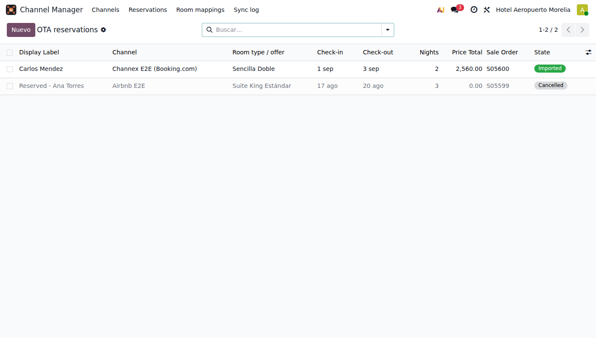
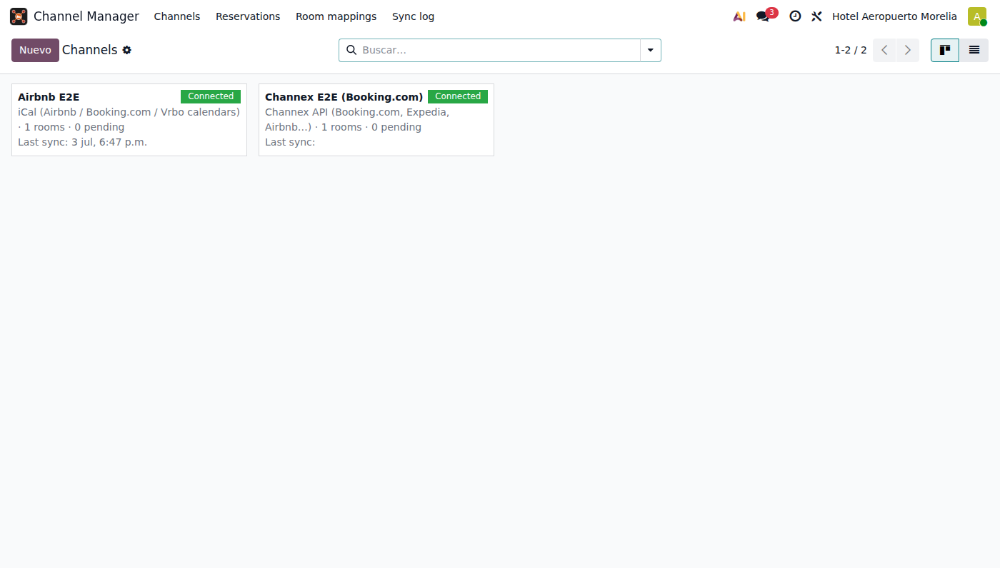

Sell your rooms on Airbnb, Booking.com, Expedia, Vrbo and keep Odoo as the single source of truth — availability, rates and reservations, both ways.
Two-way calendar sync with any platform that supports iCal (Airbnb, Booking.com, Vrbo, Lodgify…). Publish a secure feed of your occupancy per room type and import OTA reservations automatically — no API certification needed, works out of the box.
Connect through Channex.io and get real-time availability & rate push plus instant reservation webhooks for Booking.com, Expedia, Airbnb, Agoda and 100+ channels with a single connection (free sandbox available).
Built for the Odoo 19 Hotel industry / Rental flow: imported reservations become confirmed rental Sales Orders, a free physical room is assigned automatically and the native availability engine blocks the nights — your website booking widget stays consistent with the OTAs.
Every import checks real availability first. Conflicts land in the reservation inbox with an activity for the manager — never a silent double booking. Cancellations on the OTA free the room automatically (configurable).

Reservation inbox — a Booking.com reservation imported through Channex ($2,560 honoured to the cent) and an Airbnb iCal cancellation.

One channel per platform, each with its own policies and sync state.
Conecta el flujo de reservas de hotel de Odoo con las plataformas de hospedaje: sincronización iCal bidireccional (Airbnb, Booking.com, Vrbo) y API Channex (Booking.com, Expedia, Airbnb y más de 100 canales). Las reservas OTA se convierten en órdenes de venta confirmadas, con habitación física asignada y bloqueo nativo de disponibilidad; con protección contra sobreventa y manejo de cancelaciones. Bandeja de reservas, bitácora completa y políticas por canal.
Questions or a channel you need supported?
cristofferson28@gmail.com